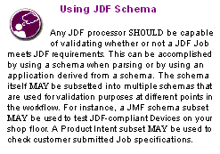

XML Schema for JDF (and JMF) will be published on: http://www.CIP4.org .
The XML Schema is not sufficient to completely validate a JDF Job. For example, Partitioned Resources or Process Node types as defined in JDF cannot be validated by XML Schema processors. In other words, the structure of some elements depends on the context of usage which cannot be completely described by XML Schema. Thus, the XML Schema for JDF will be structured in a way that it enables a pre-validation of valid JDF-candidates but does not preclude all syntactically invalid files to be validated.
XML Schema permits that multiple type definitions be derived from a base type. Wherever the schema has define an element of that base type, it is possible for the document to indicate to a validator the particular derived type that it has used. This it does by using the xsi:type Attribute with a value of the name of the type, where the "xsi" tag is associated with the Schema Instance namespace that has to be declared in the document.
Note: Use of "xsi" as the tag is normal practice.
Note: The selected type is namespace qualified (which permits extensions)
When used with JDF Nodes then all Processes defined in Section 6 are supported. Furthermore the value to be used is identical to the Process type, thus a JDF Node that has a Type of "DigitalPrinting" can inform validators to use the schema definition for DigitalPrinting Nodes by also setting xsi:type to "DigitalPrinting" .
Some JDF Nodes are general in their nature and do not have a restricted definition, (i.e., Product Intent Nodes, Combined Process Nodes and so on.) General definitions with the appropriate name are provided to enable consistent use of xsi:type .
The JDF Schema defines types for JDF Process Nodes and JMF Messages. It is recommended that these types are used with xsi:type .
< JDF xmlns = "http://www.CIP4.org/JDFSchema_1_1" ID= "BackCover"
Type = "DigitalPrinting" Version = "1.4" JobPartID = "345"
xmlns:xsi = "http://www.w3.org/2001/XMLSchema-instance"
xsi:schemaLocation = "http://www.CIP4.org/Schema/JDFSchema_1_4/JDF.xsd"
xsi:type = "DigitalPrinting" >
< DigitalPrintingParamsLink Usage = "Input" rRef = "ID123" />
< RunListLink Usage = "Input" rRef = "ID124" />
< ComponentLink Usage = "Output" rRef = "ID125" />
< DigitalPrintingParams ID = "ID123" Class = "Parameter" Status = "Available" />
< RunList ID = "ID124" Class = "Parameter" Status = "Available" />
< Component ID = "ID125" Class = "Quantity" Status = "Unavailable"
If the JDF is not in the default namespace then the type name needs to be altered accordingly:
< jdf:JDF xmlns:jdf = "http://www.CIP4.org/JDFSchema_1_1" ID= "BackCover"
Type = "DigitalPrinting" Version = "1.4" JobPartID = "345"
xmlns:xsi = "http://www.w3.org/2001/XMLSchema-instance"
xsi:type = "jdf:DigitalPrinting" >
< jdf:DigitalPrintingParamsLink Usage = "Input" rRef = "ID123" />
< jdf:RunListLink Usage = "Input" rRef = "ID124" />
< jdf:ComponentLink Usage = "Output" rRef = "ID125" />
< jdf:DigitalPrintingParams ID = "ID123" Class = "Parameter"
< jdf:RunList ID = "ID124" Class = "Parameter" Status = "Available" />
< jdf:Component ID = "ID125" Class = "Quantity" Status = "Unavailable"
JMF Messages are organized into families -- Command , Acknowledge , etc. (See Section 5.3, “JMF Message Families” ) -- and each of these families has Messages for each Message Type -- Events , KnownControllers , etc. Because it is the convolution of these two that are the unique derived types, the name used in xsi:type has to be the convolution of the Message Family and Type.
To query an event a Query Message with an Events / QueryTypeObj would be used. The type definition name employed by the JDF Schema would therefore be "QueryEvents" .
Note JMF Messages also do not have to be in the default namespace as in the JDF Node example below.
< JMF xmlns = "http://www.CIP4.org/JDFSchema_1_1" SenderID = "TestSender"
TimeStamp = "2003-11-07T12:15:56Z" MaxVersion = "1.4" Version = "1.4"
xmlns:xsi = "http://www.w3.org/2001/XMLSchema-instance" >
< Query ID = "Message_001Q" Type = "Events" xsi:type = "QueryEvents" >
< Response ID = "Message_001R" Type = "Events" refID = "Q001"